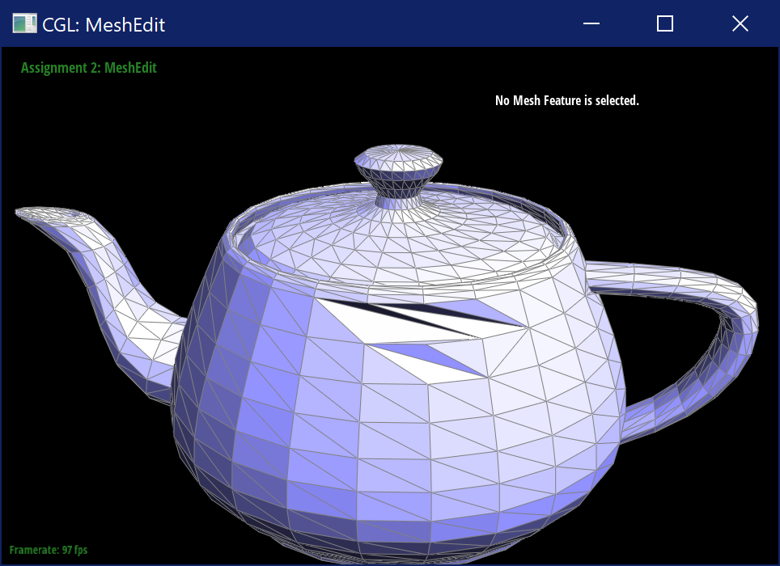

Visit this webpage here: https://cal-cs184-student.github.io/sp22-project-webpages-axmmisaka/proj2/index.html And here: https://cal-cs184-student.github.io/sp22-project-webpages-YijunLi-FiM/render.html?src=proj2/index.md
IE9 OR ABOVE AND JAVASCRIPT CAPABILITY IS REQUIRED TO
SUCCESSFULLY RENDER THIS DOCUMENT
HTML5 IS PREFERABLE BUT NOT REQUIRED
This project explores typical methods of geometric modeling, namely Bezier Curves/Surfaces and Half Edge data structure that’s commonly used to construct mesh.
BezierCurve::evaluateStep only execute a single step of de
Casteljau method, and was called iteratively to get the final point on
curve. Scanning through enough values of \(t\in[0,1]\), the output points can form a
good approximation of Bezier curve.| Initial | Level 1 | Level 2 | Level 3 |
|---|---|---|---|
|
|
|
|
| Level 4 | Final Point | Curve | |
|
|
| Initial | Level 1 | Level 2 | Level 3 |
|---|---|---|---|
 |
 |
||
| Level 4 | Final Point | Curve | |
 |
 |
BezierPatch::evaluate1D). Then we parametrized those curves
with \(u\in[0,1]\) and obtain
intermediate control points on each curve, which can be used in
BezierPatch::evaluate1D with parameter \(v\) again to get a new curve that lies on
the actual surface.bez/teapot.bez (not .dae)
evaluated by your implementation.
h->twin()->next() and accumulate the unit normal
vector of its corresponding face with
h->face()->normal(). The average of those normal
vectors is the final result.dae/teapot.dae (not .bez) comparing
teapot shading with and without vertex normals.Briefly explain how you implemented the edge flip operation and
describe any interesting implementation / debugging tricks you have
used.
First, I explicitly get iterators to all elements with naming convention
in this picture:

Then, reassign halfedge of edges/vertices/faces and updated
next/twin/vertex/face/edge of halfedges. Finally return e0.
Simple and stupid.
Show screenshots of the teapot before and after some edge
flips.
Before:
After:

Write about your eventful debugging journey, if you have
experienced one.
The whole process is bugless, I became paranoid when I saw some edges
disappearing, it appears that it’s actually overlap.
Briefly explain how you implemented the edge split operation and
describe any interesting implementation / debugging tricks you have
used.
Similar to task 4, I drew a graph to make sure I do not brainf**k myself
when naming elements.
First, I explicitly get iterators to all elements with naming convention
in this picture.
Second, I create new elements, namely m,
h10-15, e5-7, f2-3. Set
e5 and e6 isNew to be
true for the purpose of T6. Set m
isNew to be true for the purpose of T6.
Finally, I reassign halfedge of edges/vertices/faces and updated
next/twin/vertex/face/edge of halfedges. Finally return e0.
Simple and stupid.
Show screenshots of a mesh before and after some edge
splits.
Before:

After:
Show screenshots of a mesh before and after a combination of both
edge splits and edge flips.
Before:

After:

Write about your eventful debugging journey, if you have
experienced one.
Some half edges are not rendering correctly. I double-checked my graph
and fixed some wrong vertex neighbour assignments.
If you have implemented support for boundary edges, show
screenshots of your implementation properly handling split operations on
boundary edges.
For implementation, see branch q5-ec.
isNew to false;isNew to false;isNew set AND has two
non-new vertices (that is, it’s not a splitted edge), and set resulting
new vertex to newPosition of the edge calculated in
(2)isNew set and has one old
vertex and one new vertex (use xor to calculate).\dae\icosahedron\input.dae. If we pre-split edges of sharp
corners, the result becomes sharper. Similarly, if we pre-split other
edges of sharp edges’ faces, the result becomes sharper.| Splits/Position | No | Vertex | Edge |
|---|---|---|---|
| 0 |  |
||
| 1 |  |
||
| 2 |  |
||
| 3 |  |
 |
dae/cube.dae. Perform several iterations of loop
subdivision on the cube. Notice that the cube becomes slightly
asymmetric after repeated subdivisions. Can you pre-process the cube
with edge flips and splits so that the cube subdivides symmetrically?
Document these effects and explain why they occur. Also explain how your
pre-processing helps alleviate the effects.


Save your best polygon mesh as partsevenmodel.dae in your docs folder and show us a screenshot of the mesh in your write-up. upe
Include a series of screenshots showing your original mesh and your
mesh after one and two rounds of subdivision. If you have used custom
shaders, include screenshots of your mesh with those shaders applied as
well. 


Describe what you have done to enhance your mesh beyond the simple humanoid mesh described in the tutorial.
I subdivided it with Cinema 4D (this is created a while ago when it was free for students), I also changed camera settings per Piazza so it doesn’t screw up.